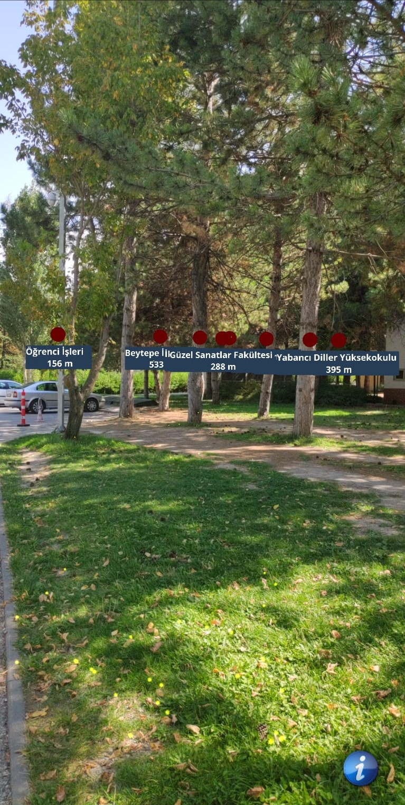

Your university has a big campus. Do you want the whole campus to be in front of your eyes?
Using augmented reality technology, CampusAR best identifies your destination with markers on the map.
Showing the relationship of locations saves you time and makes it easy to find where you want to go.

ARR allows you to use the application in 4 different methods.
You can use the method that is most useful to you.